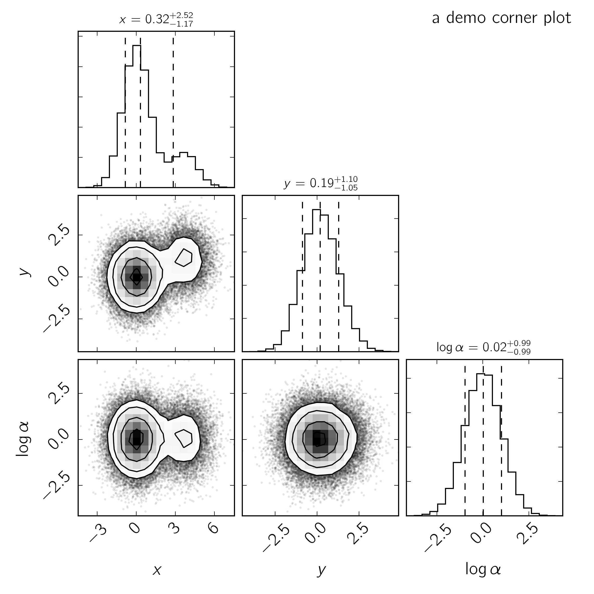

corner.py: Scatterplot matrices in Python

Summary
This Python module uses matplotlib (Hunter and others 2007) to visualize multidimensional samples using a scatterplot matrix. In these visualizations, each one- and two-dimensional projection of the sample is plotted to reveal covariances. corner was originally conceived to display the results of Markov Chain Monte Carlo simulations and the defaults are chosen with this application in mind but it can be used for displaying many qualitatively different samples.
Development of corner happens on GitHub and any issues can be raised there (Foreman-Mackey 2016). corner has been used extensively in the astronomical literature and it has occasionally been cited as corner.py or using its previous name triangle.py (System 2016). The source code for corner has been archived to Zenodo and it has the DOI (Zenodo Archive, n.d.)
The following is a simple demonstration of a visualization made with corner:
-
References
Foreman-Mackey, Daniel. 2016. “Corner.py on GitHub.” https://github.com/dfm/corner.py.
Hunter, John D, and others. 2007. “Matplotlib: A 2D Graphics Environment.” Computing in Science and Engineering 9 (3): 90–95.
System, Astrophysics Data. 2016. “ADS Search Results.” https://ui.adsabs.harvard.edu/.
Zenodo Archive. n.d. “Corner.py: Scatterplot Matrices in Python.” http://dx.doi.org/10.5281/zenodo.53155. doi:10.5281/zenodo.53155.